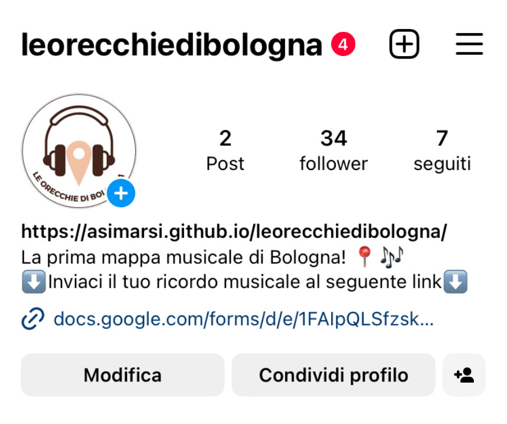
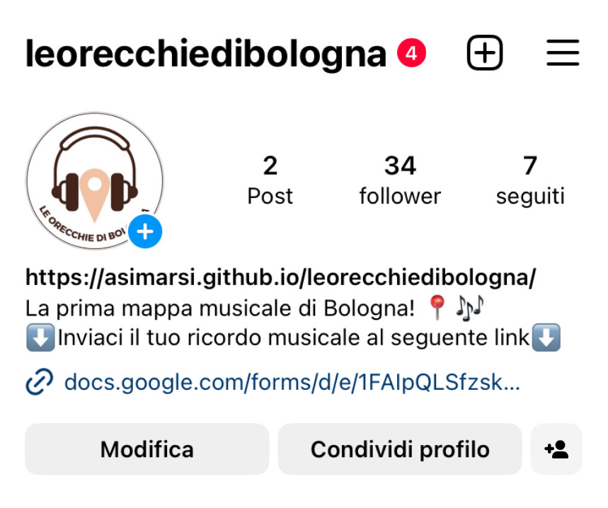

Le Orecchie di Bologna presenta due obiettivi principali:
Il sito è indirizzato agli studenti che hanno voglia di raccontare la propria esperienza Bolognese attraverso la musica.
Inoltre, il profilo Spotify della pagina, permette un rapido accesso a tutte le playlist direttamente dal sito.

- In alto si trovano il logo ufficiale del sito e il titolo.
- Il menu di navigazione prevede tre voci, di una a tendina: home, mappa e playlist. La voce playlist apre il menu a tendina in cui si trovano altri tre voci: piazze, monumenti e strade; queste ultime rappresentano le macro categorie di luoghi in cui possono essere suddivise le canzoni.
-In questo riquadro si trova una breve introduzione al sito.
- Le tre icone rappresentano gli elementi chiave del sito, ovvero la mappa, i tag del luogo e le playlist (sotto si trova una piccola descrizione).
- L'elenco numerato (passaggi 1,2,3) elanca i passaggi per inviare la tua canzone.
- Nel footer si trovano i link ai social della pagina (instagram e spotify), un richiamo al menu di navigazione e la documentazione.
Al centro troviamo un tool di Google che permette di creare mappe personalizzate.
-La playlist generale si trova in alto ad ogni pagina delle macro- categorie e contiente tutte le canzoni che sono state dedicate a quella macro- categoria.
-Sotto si trovano i singoli luoghi con le loro specifiche palylist.
Per la realizzazione del sito è stata usata la palette sovrastante, che richiama i colori caldi di Bologna. La maggior parte delle immaggini all'interno del sito sono state scattate da me stessa, per amplificare ancora di più lo scopo del sito di raccogleire esperienze di vita studentesca bolognese.
Per la realizzazione del sito sono partita utilizzando il programma Visual Studio Code; in particoalre ho utilizzato il linguaggio HTML per la creazione delle pagine e il linguaggio CSS per la grafica. Gli strumenti che ho utilizzato a supporto della progettazione sono stati:
L'obiettivo più importante per il progetto è sicuramente la condivisione della musica. Il sito, tramite una forma semi anonima (si richiede soltano il nome dell'utente, senza altri dati che potrebbero portare alla sua identità) cerca di incentivare l'invio di un ricordo musicale. In termini misurabili, gli obiettivi da raggiungere sono:
Il sito si rivolge a un target tra i 19 anni e 40 anni; in particolare ai giovani in età universitaria che cercano altri canali di condivisione attraverso i quali trasmettere la propria epserienza. Anche se il sito è pensato per unire il mondo dell'università bolognese e della musica, è indirizzato anche a tutti quei giovani che a Bologna hanno solo passato qualche giorni o fatto l'esperienza di un cocnerto (target secodnario). Per raggiungere entrami i target sono stati utilizzati:
Per la promozione del sito i mezzi utilizzati sono:
Gli obiettivi comunicativi sono stati ampiamenti raggiunti:
 
